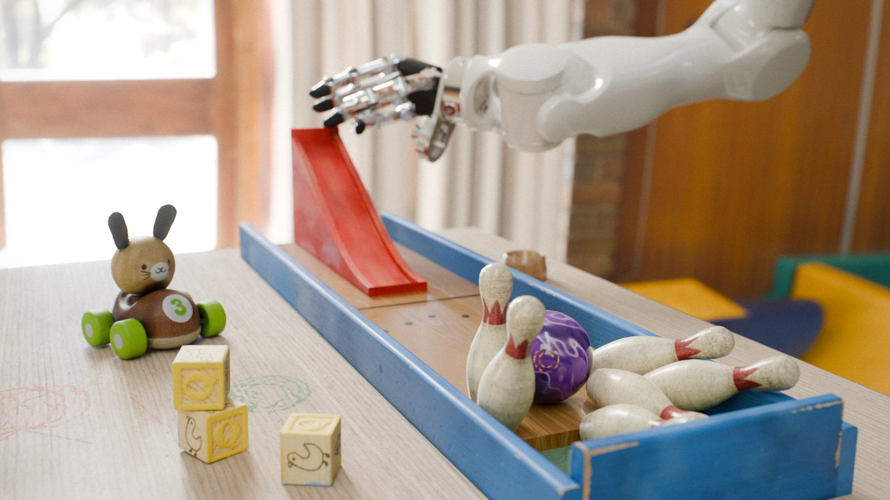

dashboard · all 50 tasks: trials and success rate · this task in the gallery · generated 2026-11-26 03:44 EST by python s2/s2loop/daily50_trials_page.py

Roll the ball and knock down the pins.
the instruction S2 was given, read from the trial record (instruction)
FLAGGED best of 2 trial(s); 0 passed. First attempt (trial 40): FLAGGED. Not passed in any attempt so far. Played by session agents, probe series — not a counted test series.
written 2026-11-26 02:41 · attempt 2 · played after reading this task's notes · episode index 111 · 13 turns (1 plan, 4 look, 3 act, 5 replan) · 665 ticks of 1500 used by the turns · run 20261126T072302Z-79dc52b9 · session daily50_t50-ba360212
The record holds no new steps.
The record holds no new steps.
The record holds no new steps.
The record holds no new steps.
The record holds no new steps.
| turn | phase | skill | what S2 said it does and why | reply | ticks |
|---|---|---|---|---|---|
| 1 | LOOK | point_at x485 + | measure the ball, the ramp (red points by point_at), ask propose_grasps and sweep check_plan for attach + level carry + let-go over the ramp channel (zero ticks) | ok | at 0no motion |
| 2 | LOOK | propose_grasps x6 | ask propose_grasps for the ball by each size class by name; if one is followable sweep check_plan for attach + level carry + let-go over the ramp channel (zero ticks) | ok | at 0no motion |
| 3 | LOOK | point_at x139 | no policy grasp for the ball (one clip, raise limit / unreachable / collisions); measure the height profile from the ball across the near rail, the ramp and the lane with point_at (zero ticks) | ok | at 0no motion |
| 4 | PLAN | touch x4 + | no policy grasp exists for the ball; plan a non-grasping roll: touch on the ball top with a contact path over the near rail into the lane, then a fist push along the lane; check_plan the touch (zero ticks) | ok | at 0no motion |
| 5 | REPLAN | touch x25 + | the roll path was refused (ik_unreachable); sweep its direction and length through check_plan and keep the first accepted (zero ticks)reason: the roll path was refused (ik_unreachable); sweep its direction and length through check_plan and keep the first accepted (zero ticks) | ok | at 0no motion |
| 6 | REPLAN | touch x24 + | touch on the ball object is out of reach at its own hand turn (touch1_hover); sweep the hand turn with a point pose on the ball top, open and fist, and the roll path, through check_plan (zero ticks)reason: touch on the ball object is out of reach at its own hand turn (touch1_hover); sweep the hand turn with a point pose on the ball top, open and fist, and the roll path, through check_plan (zero ticks) | ok | at 0no motion |
| 7 | REPLAN | solve_ik x5 + | touch cannot reach the ball; dry-run an own arm program with a non-grasping open hand, fingers down: push the ball to the rail, rise with it so it rolls over the rail corner, shove it into the lane (plan_motion only, zero ticks)reason: touch cannot reach the ball; dry-run an own arm program with a non-grasping open hand, fingers down: push the ball to the rail, rise with it so it rolls over the rail corner, shove it into the lane (plan_motion only, zero ticks) | ok | at 0no motion |
| 8 | ACT | plan_motion x12 | sweep hand turn / height / retreat of the open-hand roll-over-rail program by dry run and execute the first accepted one (non-grasping open hand, fingers down; ball pushed to the rail, rolled over it into the lane) | ok | at 0no motion |
| 9 | ACT | plan_motion x9 | find the refused segment by prefix dry runs, sweep wider hand turns and a side shift, execute the first accepted open-hand roll-over-rail program (non-grasping) | ok | at 0no motion |
| 10 | ACT | plan_motion x14 + | the approach pose was 6 mm past the near reach limit; move the start forward, dry-run by prefixes and execute the first fully accepted open-hand roll-over-rail program (non-grasping) | ok | 0–4729.4 s |
| 11 | REPLAN | localize_object + | the ball left its stand but stopped against the near rail, the fingers passed over it; ONE retry with a changed parameter (fingers pressed 1 cm into the ball at the rail, then a steep rise so friction rolls it over the rail), then greason: the ball left its stand but stopped against the near rail, the fingers passed over it; ONE retry with a changed parameter (fingers pressed 1 cm into the ball at the rail, then a steep rise so friction rolls it over the rail), then g | ok | 472–6653.9 s |
| 12 | REPLAN | localize_object | the retry did not run (no cloud for the moved ball); find the ball by words from the clean view, then the ONE changed retry: fingers pressed into the ball at the rail and a steep rise to roll it over, then go home (non-grasping openreason: the retry did not run (no cloud for the moved ball); find the ball by words from the clean view, then the ONE changed retry: fingers pressed into the ball at the rail and a steep rise to roll it over, then go home (non-grasping open | ok | at 665no motion |
| 13 | LOOK | look | look | ok | at 665no motion |
Ticks: the tick range the turn moved the robot over (one tick is 20 ms). ▶ m:ss under a turn number is where that turn starts in the video; click a row to go there.
| skill | ok | the skill's own verification (head camera, joint and servo effort) | what the record showed afterwards |
|---|---|---|---|
| execute_plan | ok | — | |
| go_home | ok | — |
written 2026-11-25 16:34 · attempt 1 · played without this task's notes · episode index 40 · 23 turns (1 plan, 18 look, 1 act, 3 check) · 624 ticks of 1500 used by the turns · run 20261125T181154Z-26e0614a · session daily50_t50-5a768bed
Judged PASS by the task's rule. FLAGGED by the coordinator on 2026-11-25: the thing was taken with a scripted finger closure (a program of its own: close and carry in one motion), not by the tracking policy. The owner ruled at 16:22 that only the tracking policy may grasp (the wrist goes down, then object and wrist go up), so this pass is NOT counted. It stays on the page as what plan-first reasoning reached with a scripted grasp.
Reason video, 55 s, 0.74 MB. The picture is the robot's head camera, drawn from the flight record after the session (the one view S2 has). The left panel's colour is the phase; the caption is what S2 said it does; a turn that moved nothing is held as a card (the plan's steps, the picture S2 looked at); the ticks after close play at double speed in grey. The status is on the last card only.
No replan in this trial.
| turn | phase | skill | what S2 said it does and why | reply | ticks |
|---|---|---|---|---|---|
| 1▶ 0:02 | LOOK | look | look | ok | at 0no motion |
| 2▶ 0:04 | LOOK | point_at x39, get_robot_state | measure the lane, the pins, the ramp and the ball with point_at before planning (no motion) | ok | at 0no motion |
| 3▶ 0:05 | LOOK | propose_grasps | ask propose_grasps for the ball in a step of its own (no motion) to learn whether a policy grasp exists | okpropose_grasps: no_grasp (no_feasible_candidate: ik_unreachable 8, raise_limit 2, path_scene_collision 6); the step itself ran | at 0no motion |
| 4▶ 0:07 | LOOK | propose_grasps | repeat propose_grasps for the ball and keep the per-class reasons in the result (no motion) | okpropose_grasps: no_grasp (same) | at 0no motion |
| 5▶ 0:08 | LOOK | propose_grasps x6 (object_class named) | ask propose_grasps for the ball again with each plausible size class named (sphere, cube, cylinder), still no motion | okpropose_grasps: no_grasp for every named class (sph60, box60, cyl50x100, penta60h7, cubeh7, dengpao55) | at 0no motion |
| 6▶ 0:10 | LOOK | solve_ik x64 | solve_ik for palm-down poses over the ball and along the ramp at eight hand turns (no motion) to learn which hand turns the arm reaches | ok | at 0no motion |
| 7▶ 0:11 | LOOK | point_at + | scan the ramp's cross-section with point_at and solve_ik the remaining hand turns (no motion) | ok | at 0no motion |
| 8▶ 0:13 | LOOK | solve_ik x36 | solve_ik for the palm set 8 cm behind the ball and behind the ramp release point at several hand turns and heights (no motion) | ok | at 0no motion |
| 9▶ 0:14 | LOOK | solve_ik + | dry-run plans only (nothing executed) of a low palm pose behind the ball, to read what the planner says about the flange and the fingers there | ok | at 0no motion |
| 10▶ 0:16 | LOOK | plan_motion dry run x5 (not executed) | dry-run plans only (nothing executed) of low palm poses over the free table in four hand postures, to read how far each part of the hand hangs below the palm | ok | at 0no motion |
| 11▶ 0:17 | LOOK | grasp_scripted with an unreachable hand turn (refused at preparation, nothing executed) | ask grasp_scripted for a hand turn the arm cannot reach (180 degrees), expecting a refusal with nothing executed, to read the grasp pose it computes for the ball | okgrasp_scripted: ik_unreachable (asked for on purpose; nothing executed) | at 0no motion |
| 12▶ 0:19 | LOOK | plan_motion dry run x16 (not executed) | dry-run plans only (nothing executed) of the low palm pose at three hand turns and two stand-offs, with the ball taken out of the world and with it kept, to see what the rail and the table allow | ok | at 0no motion |
| 13▶ 0:20 | LOOK | plan_motion dry run x7 (not executed) | dry-run plans only (nothing executed) of an open-hand descent to a lower palm pose followed by a closing dwell, to see how low the planner lets the hand close around the ball | ok | at 0no motion |
| 14▶ 0:22 | LOOK | solve_ik x16 | solve_ik for fist poses behind the ball (no motion) to learn whether a push away from the robot over the rail is reachable at all | ok | at 0no motion |
| 15▶ 0:23 | LOOK | plan_motion dry run of the whole pick-carry-let-go (refused: flange 4.2 mm from the ramp at hand turn 20 deg) | dry-run plan only (nothing executed) of the whole pick, carry and let-go over the ramp top, to read whether the planner accepts it and how long each part takes | okplan_motion: planning_failed / path_scene_collision (wrist flange 4.2 mm from the ramp); nothing executed | at 0no motion |
| 16▶ 0:25 | LOOK | plan_motion dry run x3 (hand turn 0 accepted, 10 deg refused) | dry-run plans only (nothing executed) of the pick, carry and let-go with the fingers pointing straight away from the robot, so that the wrist flange stays beside the ramp | ok | at 0no motion |
| 17▶ 0:26 | LOOK | plan_motion dry run x4 (speed limits) | dry-run plans only (nothing executed) of the same pick, carry and let-go with different speed limits, to read how long the ball would be in the air | ok | at 0no motion |
| 18▶ 0:28 | PLAN | plan | the whole task before any motion: pick the ball with an open-hand scripted grasp of my own (no policy grasp exists), carry it without stopping to the top of the ramp, let it go into the channel so it rolls into the pins; then clear th | ok | at 0no motion |
| 19▶ 0:31 | ACT | own program: plan_motion + | plan step 1: open hand down over the ball, close on it, lift, carry without stopping to the top of the ramp and let it go into the channel so that it rolls into the pins (own program; no policy grasp exists for the ball) | ok | 0–4208.4 s |
| 20▶ 0:40 | CHECK | clear_view | plan step 2: the picture already shows the ball among six lying pins; take the open hand out of the picture with clear_view so the scene settles and the lane can be checked from a clean view | ok | 420–5111.8 s |
| 21▶ 0:42 | CHECK | point_at grid + | measure the pin area from the clean view (no motion): the highest point seen there tells whether any pin still stands (heads stood at 1.00 before), and where the ball rests | ok | at 511no motion |
| 22▶ 0:43 | CHECK | plan_motion + | wait two seconds with the arm still and the hand open, then measure again, to see that the ball and the six lying pins stay where they are | ok | 511–6242.3 s |
| 23▶ 0:46 | LOOK | look | look | ok | at 624no motion |
Ticks: the tick range the turn moved the robot over (one tick is 20 ms). ▶ m:ss under a turn number is where that turn starts in the video; click a row to go there.
| skill | ok | the skill's own verification (head camera, joint and servo effort) | what the record showed afterwards |
|---|---|---|---|
| propose_grasps (8 calls, no motion) | not ok | no_grasp: 'the planner could follow none of the 16 candidates it tried for disc60h7_local_mocap' (ik_unreachable 8, raise_limit 2, path_scene_collision 6); naming sph60 / box60 / cyl50x100 / penta60h7 / cubeh7 / dengpao55 gave the same answer | — |
| solve_ik (about 150 calls, no motion) | ok | palm-down poses reachable at the ball for hand turns 0 to 75 deg and at the ramp top for -90 to 45 deg; with the palm 8 cm behind the target only 0 to 45 deg at both; 9 cm behind the ball at turn 0 is out of reach | — |
| plan_motion dry runs (never executed, 0 ticks) | ok | an open hand may stand 0.995 over the table-side of the ball (cupped: 1.007: the little fingertip 4.3 mm from the table); the whole seven-segment plan is refused at hand turn 10 and 20 deg (wrist flange 4.2-4.7 mm from the ramp) and accepted at 0 deg (flange 13.6-18.9 mm clear); rows per segment read from the diagnostics | — |
| grasp_scripted (1 call, hand turn 180 deg on purpose) | not ok | ik_unreachable at preparation; nothing planned or executed; it does not print the pose it computes | — |
| own program: plan_motion + execute_plan (pre 102, down 60, close 65, lift 40, carry 57, let_go 45, rise 38 rows; latency 13) | ok | head camera after the plan (tick 420): stand empty, ball in the lane beside the far rail among six lying pins; fingertip forces 0.01 N, hand open | the closing hand pulled the ball 2.5 cm toward the wrist onto the wrist flange (flange force up to 22 N) and 1 to 1.8 cm up toward the palm; all five fingertips on the ball; the index and middle fingertips also pressed the lane's near rail while closing (up to 12.6 N; the lane did not move); the ball left its stand at tick 212, was carried from tick 250 to 330 at up to 0.4 m/s, was let go at tick 337 with its centre at x -0.339 (1.8 cm off the channel's centre line toward the near rim, because it sat 5 cm ahead of the palm, not 7), fell about 6 cm into the channel, rolled down at up to 1.06 m/s, met the first pin at tick 375; all six pins were tipped past 45 deg by tick 391 and lay at 81 to 97 deg at the end; ball at rest from about tick 415 |
| clear_view | ok | passed: robot share of the picture 3.9 % -> 0.8 %; 73 rows + 18 latency; hand open (largest finger joint 0.027 rad) | — |
| wait (plan_motion + execute_plan, dwell 100 ticks) and measure | ok | ball's colour centroid 415.3,237.4 px before and 415.2,237.4 px after; highest point in the pin area 0.962 (the ball's top) before and after: no pin stands (heads stood at 1.00) | — |
NOTES.md)- 2026-11-25 13:55 (trial_40, attempt 1, first attempt, episode 40): judged status word PASS. Scene as the head camera showed it: a blue-walled lane along y (floor 0.902, rails about 0.925), six pins at the left end (heads at 1.00), a red ramp with a 4.5 cm channel and 0.7 cm rims at the right end (low end y -0.28, top y -0.545 at z 1.03, about 30 degrees), the 6 cm ball on a 2 cm stand in front of the lane, 6 cm from the near rail.
- 2026-11-25 13:55 (trial_40): propose_grasps for the ball on its stand: no_grasp / no_feasible_candidate (ik 8, raise limit 2, path collision 6); naming the sphere, cube and cylinder classes changed nothing. There is no policy grasp for the ball where it starts.
- 2026-11-25 13:55 (trial_40): what worked, in one own program (plan_motion + execute_plan, 407 rows + 13 latency): open hand straight down with the fingers along +x (hand turn 0), palm origin 7.5 cm behind the ball centre at z 0.997, close (ramp 40 + 25 ticks, 'close' kept, no firm), lift 8 cm, straight carry to palm (-0.391, -0.485, 1.116), open (ramp 25), rise 10 cm. The ball rolled down the ramp and the picture right after showed all six pins lying.
- 2026-11-25 13:55 (trial_40): hand turn 0 is the only one that passes at the ramp top: at 10 and 20 degrees the dry-run plan was refused with the wrist flange 4.2 to 4.7 mm from the ramp; at 60 and 90 degrees the arm does not reach.
- 2026-11-25 13:55 (trial_40, own run record read after close): the closing hand pulled the ball 2.5 cm toward the wrist and 1 to 1.8 cm up, so at the let-go its centre was at x -0.339 (channel centre -0.319: 1.8 cm off, toward the near rim) and it fell about 6 cm; it stayed in the channel and reached 1.06 m/s. Next time put the palm at ball target minus 5 cm along the fingers (not minus 7), i.e. palm x about -0.37 for the same let-go.
- 2026-11-25 13:55 (trial_40, own run record): while closing, the index and middle fingertips pressed the lane's near rail (up to 12.6 N); the lane did not move. Ticks: 420 for the pick, carry and let-go, 91 for clear_view, 113 for a 2 s wait; closed at 624 of 1500.
- 2026-11-25 13:55 (trial_40): not tried, kept as the fallback: slide the ball along +x over the near rail onto the low end of the ramp (a fist pose behind the ball is reachable: palm down, fingers along +y, 12 solutions; the fist's lowest point must stay above the rail top).
- 2026-11-26 02:41 (t50_toy_bowling, attempt 2, FAIL): propose_grasps on the ball tries only the disc60h7 clip whatever object_class is named (sph60, box60, cyl50x100, cone70x80): raise_limit (needs more than the 30 mm allowed), ik_unreachable or path collision at every hand turn; there is no policy grasp for this ball, on its stand or off it.
- 2026-11-26 02:41 (t50_toy_bowling, attempt 2, FAIL): touch on the ball (object or a point pose with any hand turn, open or fist) is refused at its own hover: ik_unreachable, failed_segment commit/touch1_hover; the ball stands at the near right corner of the reach strip.
- 2026-11-26 02:41 (t50_toy_bowling, attempt 2, FAIL): An own open-hand program with the fingers down (palm quaternion (0,1,0,0), finger pads about 1.6 cm ahead of the palm origin along +x, fingertips 18 cm under it) is accepted behind the ball only with the palm at x -0.555 or more and a start height of 1.12 (x -0.566 and start heights 1.14 / 1.16 were refused at a wrist limit); 322 rows + 150 latency = 472 ticks.
- 2026-11-26 02:41 (t50_toy_bowling, attempt 2, FAIL): That push along +x rolled the ball off its stand and it stopped against the near rail outside the lane (rail top 0.930 from x -0.411, ball centre then about level with the rail top): the fingers rose over it without rolling it over. A horizontal push cannot lift it over the rail; a retry needs the fingers pressed into the ball before the rise, or a way to lift it.
- 2026-11-26 02:41 (t50_toy_bowling, attempt 2, FAIL): Once the ball lies against the rail it is no depth object (joined with the lane) and localize_object('the purple ball') returned a toy block elsewhere (the result's field is .estimate): take its place from point_at and keep a cloud of your own before moving it.